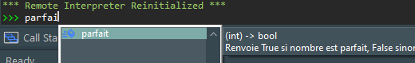

Mise au point des programmes et gestion des bugs
Comment s’assurer qu’un programme fasse ce qu’il est censé faire ? Qu’il ne contient pas de bugs ? Ces questions que chacun se pose quand il écrit un programme peuvent devenir extrêmement cruciales et compliquées quand certains programmes informatiques contiennent des millions de lignes de code, voire des milliards (Google)1 ou avoir des défauts de fonctionnements aux conséquences désastreuses (avionique, nucléaire, médical, etc.). Des solutions existent pour essayer de limiter ces effets néfastes.
L’utilisation combinée de spécifications, d'assertions, de documentations des programmes et de jeux de tests permettent de limiter (mais pas de garantir ! 2 ) la présence de bugs dans les programmes.
Bugs (ou bogues) et exceptions
Il existe de nombreuses causes qui peuvent être à l’origine de bugs dans un programme : oubli d’un cas3, typo, dépassement de capacité mémoire4, mauvaise communication avec les utilisateurs ou entre programmeurs, etc.
Cours
Un bug (ou bogue) est une erreur dans un programme à l’origine d’un dysfonctionnement.
Un bug peut conduire à un résultat qui n’est pas celui attendu, par exemple si est_premier(5) renvoyait False, voire même dans certains cas à une exception (mais ce n’est pas toujours le cas).
Cours
Une exception est une erreur qui se produit pendant l'exécution du programme. Lorsqu'une exception se produit (on dit que l’exception est 'levée'), l'exécution normale du programme est interrompue et l'exception est traitée.
Une bonne façon de gérer les exceptions est de comprendre les différents types d'erreurs qui surviennent et pourquoi elles se produisent. Soyons attentifs aux messages d’erreur que nous affiche l’interpréteur, ils sont d’une grande utilité5. En voici certains parmi les plus courants :
-
SyntaxError: Une ligne de code non valide empêche le programme de s’exécuter. -
IndentationError: Une mauvaise indentation ne permet pas de définir les blocs de code correctement6.
for i in range(10):
print(i)
IndentationError: expected an indented block after 'for' statement on line 1
-
TypeError: Une opération utilise des types de données incompatibles. -
ValueError: Une fonction est appelée avec une valeur d'argument non autorisée.
Pour corriger les bugs et exceptions inévitables lorsqu’on écrit un programme, le débogueur est un outil très utile.
Cours
Le débogueur permet d’effectuer l’exécution ligne par ligne en observant l’évolution du programme et les valeurs des variables.
Pour utiliser le débogueur de PyScripter :
- Créer un point d’arrêt sur une ligne (clic sur le numéro de la ligne), ou plusieurs.
- Lancer le débogage ( ) ce qui exécute le script jusqu’au point d’arrêt
- Exécuter le script pas à pas tout en inspectant l’évolution des variables dans les onglets Variables ou Watches (surveillances). Pour ajouter une variable à surveiller, cliquer droit dans la fenêtre Watches et ajouter un nom de la variable ou une expression.
Commentaires, noms de variables et de fonctions
Il est difficile de dire ce que fait cette fonction au premier coup d'oeil :
PEP 8
Ecrire les noms tout en minuscule avec des mots séparés par des blancs soulignés (_) par exemple nom_de variable (snake case) plutôt que NomDeVariable (camel case)
C’est plus déjà plus lisible avec des noms de fonction et variable qui ont un sens plutôt que réduits à une lettre.
et encore plus lisible avec des commentaires :
Cours
PEP 8
Limiter la longueur des lignes à 79 ou 80 caractères.
Écrire un beau code Python implique d'adopter certaines conventions et bonnes pratiques pour le rendre clair, lisible, maintenable et compréhensible pour vous-même et pour les autres développeurs7 :
-
Choisir des noms de variables et de fonctions significatifs et éviter les noms génériques comme "a", "b", "x", etc. qui ne donnent pas d'indication sur leur contenu. Préférer des noms descriptifs comme "somme_diviseurs" plutôt que "sd".
-
Commenter le code pour expliquer les parties importantes, les décisions de conception, les algorithmes, etc. Les commentaires doivent être clairs, concis et utiles. N'ajoutez pas de commentaires évidents qui ne font que répéter le code.
Spécifications de fonctions
Cours
La spécification (ou prototype) d’une fonction est un mode d'emploi à l’attention des utilisateurs d’une fonction expliquant clairement :
-
ce que fait la fonction,
-
les paramètres qu’elle accepte,
-
les valeurs qu’elle renvoie.
En python, la spécification est résumée dans la « docstring », un commentaire au début du corps de la fonction entre tripe guillemets (ou triple apostrophes) :
Par convention, les """ de fin sont seuls sur la dernière ligne.
Si l’idée générale est toujours la même, aucun format n'est imposé même si certaines conventions sont données dans la PEP 257. En pratique, il existe différentes habitudes d'écrire les docstrings de fonctions et il est important de rester consistant à travers un même programme pour améliorer la lisibilité du code.
Par exemple, la fonction précédente parfait(nombre) pourrait se présenter sous la forme :
ou encore :
ou plus simplement sur une seule ligne (dans ce cas les """ sont écrits sur la même ligne):
La fonction help affiche la docstring d’une fonction :
>>> help(est_premier)
Help on function parfait in module __main__:
est_premier(nombre)
(int) -> bool
Renvoie True si un nombre est parfait, False sinon
 Ne pas confondre la spécification encadrée par
Ne pas confondre la spécification encadrée par """ avec les commentaires qui commencent par #. D’ailleurs il est possible d'ajouter des commentaires commençant par # dans une docstring qui ne seront pas affichés par help. La spécification sera lue par le programmeur qui utilise la fonction, les commentaires par celui qui lira et modifiera le code de la fonction.
Remarquer l'affichage dans la console ou dans la zone de programme PyScriter la spécification qui s’affiche après avoir saisi le nom de la fonction, par exemple parfait(.

Préconditions, postconditions
Testons la fonction parfait(nombre) avec un exemple simple :
parfait ?
>>> parfait(13.0)
Traceback (most recent call last):
File "<interactive input>", line 1, in <module>
File "<module2>", line 8, in parfait
TypeError: 'float' object cannot be interpreted as an integer
nombre doit impératif être de type entier. C’est une précondition de la fonction. Il est souvent recommandé d'indiquer les préconditions dans la docstring de la fonction pour limiter les risques d'erreur.
def parfait(nombre):
""" (int) -> bool
Precondition : nombre est de type int et positif
Fonction qui renvoie True si nombre est parfait, False sinon
"""
Cours
Les préconditions sont des conditions qui doivent être vraies avant l'exécution d'une fonction pour garantir que celle-ci fonctionne correctement. Si une précondition échoue, cela signifie que l'appel de la fonction n'était pas correct.
Les postconditions sont des conditions qui doivent être vraies après l'exécution d'une fonction. Elles permettent de vérifier si la fonction s'est exécutée correctement et a donné les résultats attendus.
Par exemple : - une précondition à une fonction effectuant une division est de s’assurer que le dénominateur est non nul,
- une postcondition à une fonction renvoyant la valeur absolue d’un nombre est de vérifier que la fonction renvoie une valeur positive.
Les preconditions et postconditions peuvent être indiquées dans la docstring ou vérifiées par des assertions.
Variant et invariant de boucle
Cours
Un variant de boucle permet de s’assurer qu’une boucle se terminera.
Mais il ne vérifie pas qu’un algorithme fournit la réponse attendue.
Prenons un exemple. Une fonction de division euclidienne de deux entiers positifs n par d peut s’écrire de la manière suivante :
A noter que d > 0 est une précondition qui doit être vérifiée au début de la fonction. Si ce n'est pas cas et que d ≤ 0 alors la boucle ne se terminera jamais !
Ici le variant de boucle est r. A chaque passage dans la boucle il diminue de d (d est positif) donc la condition r >= d finira par ne plus être vérifiée, la boucle se terminera.
Cours
Un invariant de boucle est une propriété ou une expression :
– qui est vraie avant d'entrer dans la boucle ;
– qui reste vraie après chaque itération de boucle ;
– et qui, conjointement à la condition d’arrêt, permet de montrer que le résultat attendu est bien le résultat calculé.
Ici l’invariant de boucle est la propriété: n == q * d + r.
Prenons en exemple n = 13 et d = 3 et observons les états successifs du programme au début de chaque instruction. Au début de la ligne 2, les valeurs de q et r ne sont pas spécifiées, donc la condition r >= d ne peut être évaluée, la prochaine instruction à exécuter est la ligne 3 :
(ligne) q r r >= d (ligne suivante) n == q * d + r
=======================================================================
2 - - - 3 -
q et r ont pris les valeurs 0 et 13, la condition r >= d est vérifiée, le programme entre dans la boucle et la prochaine instruction à exécuter est la ligne 4. Complétons la table.
(ligne) q r r >= d (ligne suivante) n == q * d + r
=======================================================================
2 - - - 3 -
3 0 13 True 4 VRAI (entrée dans la boucle)
Au début de la ligne 4, les valeurs de q et r sont inchangées, la condition r >= d reste donc vérifiée, l’instruction suivante est 5. Complétons ainsi la table jusqu’à la fin du programme :
(ligne) q r r >= d (ligne suivante) n == q * d + r
=======================================================================
2 - - - 3 -
3 0 13 True 4 VRAI (entrée dans la boucle)
4 0 13 True 5 VRAI
5 1 13 True 2 FAUX
3 1 10 True 4 VRAI (retour dans la boucle)
4 1 10 True 5 VRAI
5 2 10 True 3 FAUX
3 2 7 True 4 VRAI (retour dans la boucle)
4 2 7 True 5 VRAI
5 3 7 True 3 FAUX
3 3 4 True 4 VRAI (retour dans la boucle)
4 3 4 True 5 VRAI
5 4 4 True 3 FAUX
3 4 1 False sortie de boucle VRAI
il n'y a pas unicité de variant ni d'invariant de boucle.
Observons que la propriété n == q * d + r reste vraie à chaque retour dans la boucle, même si elle n'est pas toujours vraie au milieu de la boucle. Elle est aussi vraie en sortie de boucle et permet de s’assurer que le résultat calculé est celui attendu.
Exercice corrigé
On considère la fonction palindrome suivante :
- Décrire l’évolution des valeurs des variables le fonctionnement de l’algorithme précédent pour le mot
"radar". - Montrer que
j – iest un variant de boucle. En déduire que la fonctionpalindromese termine. - Montrer que
i + j == len(mot) - 1est un invariant de boucle.
Réponse 1
La table suivante montre les états successifs du programme avec le mot "radar".
(ligne) i j i <= j mot[i] mot[j] j – i i + j (ligne suivante)
=========================================================================================
4 0 - - r - - - (5)
5 0 4 True r r 4 4 (6) entrée dans la boucle
6 0 4 True r r 4 4 (7) mot[i] == mot[j]
7 0 4 True r r 4 4 (8)
8 1 4 True a r 3 5 (5)
5 1 3 True a a 2 4 (6) entrée dans la boucle
6 1 3 True a a 2 4 (7) mot[i] == mot[j]
7 1 3 True a a 2 4 (8)
8 2 3 True d a 1 5 (5)
5 2 2 True d d 0 4 (6) entrée dans la boucle
6 2 2 True d d 0 4 (7) mot[i] == mot[j]
7 2 2 True d d 0 4 (8)
8 3 2 False a d -1 5 (5)
5 3 1 False a d -2 4 (11) sortie de la boucle
Réponse 2
A chaque itération j - i diminue de 2 , c’est un variant de boucle qui finira par devenir négatif, autrement dit la condition i <= j deviendra fausse et la boucle s’arrêtera (à moins qu’elle se termine plus tôt si mot n’est pas un palindrome), donc le programme se terminera.
Il est aussi possible de le démontrer formellement. Supposons que l’on rentre dans la boucle à la ligne 5 avec i et j ayant des valeurs appelées \(x\) et \(y\). j - i est égal à \(y - x\). Après les lignes 7 et 8, i devient égal à \(x + 1\) et j à \(y - 1\), donc j - i devient bien égal à \((y - 1) – (x + 1) = (y – x) - 2\). j - i a bien diminué de \(2\).
Réponse 3
De la même façon, il est possible de démontrer que i + j == len(mot) - 1 est un invariant de boucle :
- Au début du programme, avant de rentrer dans la boucle,
iest égal à 0 et j est égal àlen(mot)- 1donci + jest bien égal àlen(mot) - 1. - Lorsqu’on rentre dans la boucle à la ligne 5 avec
ietjayant des valeurs \(x\) et \(y\) telles que \(x + y\) est égal àlen(mot) - 1, après les lignes 7 et 8,idevient égal à \(x + 1\) etjà \(y - 1\), donci + jest toujours égal à $(x + 1) + (y - 1) = x + y $ c'est-à-dire àlen(mot) – 1.
Assertions
Des assertions permettent de tester les préconditions, postconditions et les invariants de boucles. Leur non-respect alerte sur une erreur de programmation.
Cours
Une Assertion vérifie qu’une expression est *vraie et arrête le programme sinon .
Un message peut être affiché quand une assertion est fausse avant d'arrêter le programme :
Reprenons la fonction est_premier(nombre) vue précédemment. Le paramètre nombre doit être de type entier et positif. Ce sont des préconditions. Ajoutons les assertions correspondantes au début de la fonction.
et testons le résultat :
>>> est_premier('5')
Traceback (most recent call last):
File "<interactive input>", line 1, in <module>
File "….", line 16, in est_premier
assert(type(nombre) == int)
AssertionError
>>> est_premier(-1)
Traceback (most recent call last):
File "<interactive input>", line 1, in <module>
File "….", line 7, in est_premier
assert nombre >= 0, 'nombre doit être positif'
AssertionError: nombre doit être positif
assert est souvent utilisé en phase de test seulement ou en programmation défensive8.
L'instruction try...…except... (hors programme) permet de gérer efficament les erreurs prévisibles d’utilisateur, lors d’une saisie par exemple :
while True:
try:
n = input("Entrez un nombre entier ")
n = int(n)
break
except ValueError:
print(n, "n'est pas un entier, essayer à nouveau ...")
print(n, "est bien un nombre entier")
Jeux de tests
Les spécifications et les vérifications des pré et postconditions d’un programme ne garantissent pas l’absence de bugs. Avant de pouvoir utiliser un programme, il est important d’effectuer un jeu de tests pour déceler d’éventuelles erreurs.
Cours
Un jeu de test permet de trouver d’éventuelles erreurs. Le succès d’un jeu de tests ne garantit pas qu’il n’y ait pas d’erreur.
La qualité et le nombre de tests sont importants.
La qualité des tests
Cours
Les tests doivent porter sur des valeurs d’arguments "normales" mais aussi des valeurs "spéciales" ou "extrêmes" du programme.
Par exemple, que se passe-t-il quand les valeurs 0 ou 1 sont passées en argument à la fonction est_premier ?
Mais 0 et 1 ne sont pas des nombres premiers ! Il faut donc corriger la fonction en ajoutant ces cas qui avaient été oubliés.
Le nombre de tests
Cours
Un programme de test permet d’effectuer un grand nombre de tests automatiquement.
Vérifions par des assertions la fonction est_premier pour tous les multiples de 2 allant de 4 à 100.
def test_est_premier():
"""Jeu de tests de est_premier() pour tous les multiples de 2 entre 4 et 100 """
for i in range(2, 51):
assert not est_premier(2 * i)
return True
Il est aussi possible d'écrire un programme de tests en utilisant la célèbre formule d’Euler : \(n^2 + n + 41\) qui produit de nombreux nombres premiers, notamment pour tous les nombres \(n\) allant de 0 à 39.
def test2_est_premier():
"""Jeu de tests de est_premier() par la formule d’Euler 2**2+n+41"""
for i in range(40):
assert est_premier(i**2 + i + 41)
return True
Le module doctest
La fonction tesmod() du module doctest permet d’effectuer automatiquement un jeu de tests défini dans la docstring d’une fonction. Chaque test à effectuer est indiqué dans la docstring sur une ligne commençant par >>> pour simuler la console et le résultat attendu dans la ligne suivante.
Par exemple :
import doctest
def est_premier(nombre):
""" (int) -> bool
Precondition : nombre est de type int et positif
Renvoie True si nombre est premier, False sinon
>>> est_premier(3)
True
>>> est_premier(4)
False
"""
…
doctest.testmod()
-
https://www.informationisbeautiful.net/visualizations/million-lines-of-code/ ↩
-
Dans la pratique il n'est pas possible de tester un logiciel dans toutes les conditions qu'il pourrait rencontrer lors de son utilisation et donc pas possible de contrer la totalité des bugs : un logiciel comme Microsoft Word compte 850 commandes et 1 600 fonctions, ce qui fait un total de plus de 500 millions de conditions à tester. ↩
-
En 1996, l'USS Yorktown teste le programme Navy's Smart Ship. Un membre d'équipage rentre un zéro comme valeur lors de manœuvres. Source : https://en.wikipedia.org/wiki/USS_Yorktown_(CG-48) ↩
-
Premier vol d'Ariane 5 en 1996 : Le code utilisé était celui d'Ariane 4, mais les valeurs d'accélération de la fusée dépassent les valeurs maximales prévues ! Source: https://fr.wikipedia.org/wiki/Vol_501_d%27Ariane_5 ↩
-
RTFM est, en anglais, le sigle de la phrase Read the fucking manual, injonction signifiant que la réponse à une question sur le fonctionnement d'un appareil est à chercher dans son mode d'emploi. ↩
-
Contrairement à d'autres langages comme Java, C ou C++, qui utilisent des accolades pour séparer les blocs de code, Python utilise l'indentation pour définir la hiérarchie et la structure des blocs de code. ↩
-
Comme le disait Guido van Rossum: “Code is read much more often than it is written.” ↩
-
La programmation défensive est un mode de programmation qui vise à créer des programmes et des applications robustes face aux erreurs et aux entrées de données inattendues. ↩